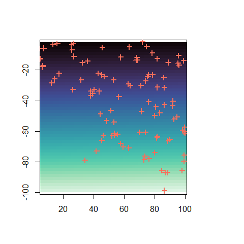
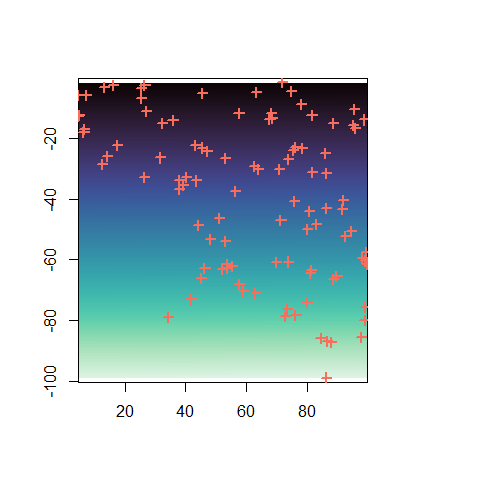
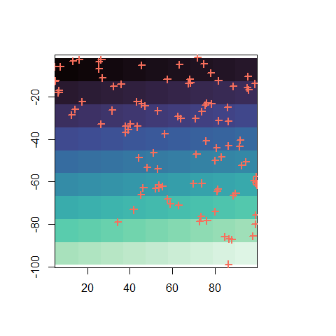
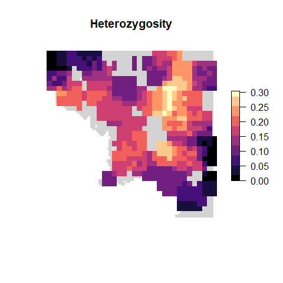
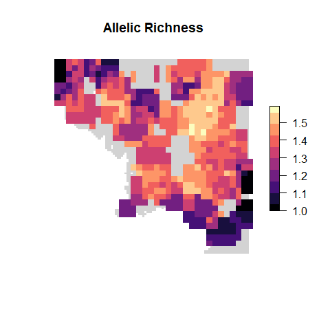

wingen-vignette
wingen-vignette.RmdWingen
Background
In short, wingen uses a moving window approach to create maps of genetic diversity. The method and its rationale is described in the package paper:
[CITATION]
In it, we describe wingen in this paper as follows:
"(wingen) creates continuous maps of pi, heterozygosity, and allelic richness from standard genotypic and spatial data using a moving window approach. In our approach, the landscape is divided up into cells and genetic diversity is calculated from samples falling within a window (i.e. a box) around each cell (Fig 1). In such a way, the neighborhood around each cell, as defined by the window dimensions, is treated as a population for estimating genetic diversity. The output is a map in which each cell represents the genetic diversity of the neighborhood around it. Because these neighborhoods can contain different numbers of samples, we provide options for rarefaction to control for the effects of sample size differences on measures of genetic diversity.
We also include options for spatial interpolation to create smoother genetic diversity surfaces from the moving window maps. To do this, we use a type of interpolation known as kriging, which estimates values at unknown points using a spatial model known as a variogram. Using kriging based interpolation allows for smoothing out of discontinuities created by the moving window. Finally, the original moving window map as well as the kriged surfaces can be masked to exclude regions that were not sampled or were undersampled. Altogether, wingen provides the tools to create informative maps of genetic diversity that can be used in conservation or population genetic analyses."
Example
To demonstrate how wingen works we will use a subset the data from the simulation example from the package paper (Bishop et al., 202X). These simulations were created using Geonomics (Terasaki Hart et al., 2022) to generate a realistic landscape genomic dataset. In this simulation, spatial variation in genetic diversity is produced by varying population size and gene flow across the landscape via heterogenous carrying capacity and conductance surfaces. These surfaces are based on an example digital elevation model of Tolkien’s Middle Earth produced by the Center for Geospatial Analysis at William & Mary (Robert, 2020).
Load middle earth example
The smaller middle earth example dataset used in our example contains three objects which are loaded by load_middle_earth_ex:
lotr_vcf - a vcfR object containing the genetic data
lotr_coords - a dataframe object containing sample coordinates
lotr_lyr - a raster object of the landscape (higher values indicate greater connectivity/carrying capacity)
load_middle_earth_ex()
#>
#> ------------- middle earth example -------------
#>
#> Objects loaded:
#> *lotr_vcf* vcfR object (100 loci x 100 samples)
#> *lotr_coords* dataframe with x and y coordinates
#> *lotr_lyr* middle earth RasterLayer (100 x 100)
#>
#> ------------------------------------------------
#>
#>
# Genetic data
lotr_vcf
#> ***** Object of Class vcfR *****
#> 100 samples
#> 1 CHROMs
#> 100 variants
#> Object size: 0.1 Mb
#> 0 percent missing data
#> ***** ***** *****
# Coordinates
head(lotr_coords)
#> x y
#> 538 88.73547 -66.61610
#> 1397 78.50479 -23.24048
#> 1200 14.32163 -25.99363
#> 952 89.86373 -65.49860
#> 1177 45.42427 -23.13054
#> 383 98.89395 -13.88943
# Raster data
lotr_lyr
#> class : RasterLayer
#> dimensions : 100, 100, 10000 (nrow, ncol, ncell)
#> resolution : 1, 1 (x, y)
#> extent : 0, 100, -100, 0 (xmin, xmax, ymin, ymax)
#> crs : NA
#> source : memory
#> names : layer
#> values : 0, 1 (min, max)
# Map of data
plot(lotr_lyr, col = magma(100), axes = FALSE, box = FALSE)
points(lotr_coords, col = mako(1, begin = 0.8), pch = 3, cex = 0.5) If users don’t have a raster layer of their landscape they can generate one from their coordinates using the
If users don’t have a raster layer of their landscape they can generate one from their coordinates using the coords_to_raster function. The resolution of this raster can be either tuned with the agg (to aggregation) and disagg (to disaggregate) arguments or defined using the res argument. The res argument can either be a single value (e.g. 0.00833) or a vector of two values with the x and y resolutions.
ex_raster1 <- coords_to_raster(lotr_coords, buffer = 1, plot = TRUE)
ex_raster2 <- coords_to_raster(lotr_coords, buffer = 1, agg = 2, plot = TRUE)
ex_raster3 <- coords_to_raster(lotr_coords, buffer = 1, disagg = 4, plot = TRUE)
ex_raster4 <- coords_to_raster(lotr_coords, buffer = 1, res = 10, plot = TRUE)
Workflow
The workflow of wingen uses three main functions:
window_gdto generate moving window maps of genetic diversitykrige_gdto use kriging to interpolate the sliding window mapsmask_gdto mask areas of the maps from (1) and (2) (e.g. to exclude undersampled areas)
Run sliding window calculations
The main arguments to window_gd are:
vcf - object of type vcf with genotypic data. The order of this file matters! the coordinate and genetic data should be in the same order, as there are currently no checks for this.
coords - a matrix or dataframe with two columns representing the coordinates of the samples. The first column should be x (i.e. Longitude) and the second should be y (i.e. Latitude).
lyr - a RasterLayer which the window will move across to create the final map. In most cases, this will take the form of a raster of the study area.
stat - the genetic diversity summary statistic to calculate. We provide options for calculating nucleotide diversity (pi), average allelic richness, or average heterozygosity. Currently, the option to calculate nucleotide diversity only works for bi-allelic data. In addition, there are two functions for calculating allelic richness: (1) “allelic.richness” which uses the allelic.richness function from the “hierfstat” package and (2) “biallelic.richness” which provides a much faster calculation of allelic richness, but only works for bi-allelic data.
fact - to decrease computational time, we provide the option to aggregate the input raster layer by some factor defined using the “fact” argument. Increasing “fact” will decrease the number of cells and thereby decrease the number of calculations, with the trade-off of decreasing the resolution of the output layers. Users should keep in mind that if they increase “fact” they may simultaneously want to decrease “wdim” since the proportion of the landscape covered by the neighborhood matrix would otherwise increase substantially.
wdim - used to create the neighborhood matrix for the moving window based on the dimensions provided. This argument can either be set to one value (e.g. 3) which will create a square window (e.g. 3 x 3), or two values can be provided to create a rectangular window (e.g. 3 x 5). We encourage users to experiment with different values of “wdim” to determine the sensitivity of their results to this parameter. Ideally, “wdim” would be set with some knowledge of the study system in mind (e.g. the dispersal patterns and/or neighborhood size of the study organism). A preview of the window size relative to the landscape can be obtained using the
preview_windowfunctionrarify - Users have the option to perform rarefaction by setting the “rarify” argument to TRUE. If “rarify = TRUE”, users then define “rarify_n” as the number of samples to rarify to and “rarify_nit” as the number of iterations for rarefaction (e.g. if rarify_n = 4 and rarify_nit = 5, for each sample set, four random samples will be drawn five times). As the window moves across the landscape, three things can occur based on the number of samples in the window: (1) if the number of samples is less than “rarify_n”, genetic diversity is not calculated and a raster value of “NA” is assigned, (2) if the number of samples is equal to “rarify_n” the genetic diversity statistic is calculated for those samples, (3) if the number of samples is greater than “rarify_n,” rarefaction is implemented and that set of samples is subsampled “rarify_nit” times to a size of “rarify_n” and the mean (or another summary statistic set using “fun”) of those “rarify_nit” iterations is used. We suggest that users select “rarify_n” and “rarify_nit” such that the number of possible ways to choose “rarify_n” from a sample of size “rarify_n” plus one is greater than “rarify_nit” in order for there to always be “rarify_nit” number of unique combinations of size “rarify_n”. If “rarify = FALSE”, rarefaction is not performed and only steps (1) and (2) occur such that: (1) if the number of samples in the window is less than the “min_n” argument, genetic diversity is not calculated and a raster value of “NA” is assigned and (2) if the number of samples is equal to or greater than “min_n” the genetic diversity statistic is calculated for those samples. We highly encourage users to perform rarefaction as genetic diversity statistics are sensitive to sample size. The main benefit of not performing rarefaction is decreased computational time, however this is not worth the trade-off in inaccuracy unless you are confident that there is no effect of rarefaction after performing your analysis with and without rarefaction.
parallel - in order to increase computational efficiency, we provide the option for parallelization by setting the “parallel” argument to TRUE. Parallelization is performed using the “foreach” and “doParallel” R packages. To perform parallelization on a Windows operating system a cluster must first be initialized using a few lines of code, a process which we describe later on.
Before running window_gd users can preview the moving window and the counts within each cell of the raster to get a sense of how big the window is and what the density of counts looks like across the landscape. Here we provide the raster layer (lotr_lyr), the coordinates (lotr_coords), the window dimensions (5), the aggregation factor (3), and the minimum sample number (min_n). Min_n will be used to mask the sample count layer to show how much of the landscape will be excluded due to low sample counts (note: min_n is equivalent to rarify_n if rarefaction is used)
preview_gd(lotr_lyr,
lotr_coords,
wdim = 5,
fact = 3,
sample_count = TRUE,
min_n = 2)

Next, we run the moving window function with our vcf, coords, and raster layer. Here we set the parameters to calculate pi, use a window size of 5 x 5, an aggregation factor of 3, and rarefaction with a rarefaction size of 2 (minimum sample size of 2) and 5 iterations.
The nloci argument is used in the calculation of pi. if nloci=NULL (default), the function returns the sum over SNPs of nucleotide diversity Otherwise, the function returns the average nucleotide diversity per nucleotide given the length nloci of the sequence.
We then plot the genetic diversity layer (the first layer of the produced RasterStack) and the sample counts layer (the second stack)
wgd <- window_gd(lotr_vcf,
lotr_coords,
lotr_lyr,
stat = "pi",
wdim = 5,
fact = 3,
rarify = TRUE,
rarify_n = 2,
rarify_nit = 5,
nloci = 100)
#> Loading required namespace: adegenet
# the plot_gd function plots the genetic diversity layer
plot_gd(wgd, main = "Window pi")
# the plot_count function plots the sample count layer
plot_count(wgd, main = "Window sample counts")
Krige results
To produce smoother maps of genetic diversity, we provide the function krig_gd() which creates a spatially interpolated raster from the moving window raster produced by window_gd(). This function uses the autoKrige() function from the R package “automap” to perform kriging on the moving window raster using an automatically generated variogram. Note that the RasterStack from window_gd() including both the genetic diversity layer and the sample count layer can be used and will generate kriged maps of both genetic diversity and sample count.
Kriging is performed by first transforming the sliding window layer into a set of coordinates with corresponding genetic diversity (or sample count) values and then interpolating using these coordinates across the grid provided. Because of this, it is important to keep in mind how the coordinates from the sliding window raster and the grid align. If the resolution of the sliding window raster is much less than that of the grid, there are fewer points for interpolation which can result in grid-like artifacts during kriging.
To deal with this issue, users can either (1) resample their sliding window raster layers and grid layers to the same resolution by using the “resample” argument or (2) manually disaggregate or aggregate either the sliding window or grid layers using the “r_agg”, “r_disagg”, “grd_agg”, or “grd_disagg” arguments. Generally, if users want a smoother resulting surface, a higher resolution grid layer should be used (this can be accomplished by using the “grd_disagg” argument to disaggregate the grid layer). The resampling, aggregation, and disaggregation options currently only work if the object provided to create the grid is a RasterLayer. Keep in mind that increasing the resolution of the sliding window layer (i.e. either by resampling or disaggregating) can increase computational time substantially as this increases the number of coordinates being used for kriging. This is also the case for increasing the resolution of the grid layer, however to a lesser extent.
To run this function we provide the RasterStack output from window_gd, the indices of the layers we want to krige (in this case both the genetic diversity (1) and sample count (2) layers), and the raster layer to interpolate across. We also disaggregate the original layer by a factor of two to get a smoother output surface (users should play around with this parameter). The output of this function is a RasterStack of the kriged input layers.
# note: this step can take a little while
kgd <- krig_gd(wgd, indices = 1:2, lotr_lyr, disagg_grd = 2)
#> [using ordinary kriging]
#> [using ordinary kriging]
plot_gd(kgd, main = "Kriged pi")
plot_count(kgd, main = "Kriged sample counts")
Mask results
Next, we mask the resulting kriged layers. Masking can be performed using a variety of methods.
For example, we can mask using the carrying capacity layer to exclude any areas where the carrying capacity is less than 0.01 (analagous to this might be using a species distribution model or habitat suitability model to exclude areas where the probability of presence is very low):

You could also mask the layer using the sample counts layer produced by wingen to exclude undersampled areas (in this case areas where the kriged value is less than 1):
mgd <- mask_gd(kgd[["pi"]], kgd[["sample_count"]], minval = 1)
plot_gd(mgd, main = "Kriged & masked pi")
Another nice visualization addition is to add a “background” to your plots in the form of a RasterLayer or other spatial object (e.g. a country boundary) which can help provide geographic context:
# Create a "range map" for this species by masking areas of very low suitability
range_map <- lotr_lyr
range_map[range_map < 0.01] <- NA
plot_gd(mgd, bkg = range_map, main = "Kriged & masked pi")
Parallelization
To increase computational speed users can perform the window_gd calculations with parallelization. If you are on a windows machine you first need to initate a cluster to do so, as shown below:
cores <- 5
cl <- makeCluster(cores)
registerDoParallel(cl)
system.time(
wgd <- window_gd(lotr_vcf,
lotr_coords,
lotr_lyr,
stat = "pi",
fact = 3,
wdim = 5,
rarify_n = 2,
rarify_nit = 5,
rarify = TRUE,
nloci = 1000,
parallel = TRUE)
)
stopCluster(cl)Other genetic diversity metrics
In addition to pi, users can calculate heterozygosity (“het”), allelic richness (either using “biallelic.richness” (faster but only works on biallelic data) or “allelic.richness”)
pi_wgd <- window_gd(lotr_vcf,
lotr_coords,
lotr_lyr,
stat = "pi",
fact = 3,
wdim = 5,
rarify_n = 2,
rarify_nit = 5,
rarify = TRUE,
nloci = 1000)
het_wgd <- window_gd(lotr_vcf,
lotr_coords,
lotr_lyr,
stat = "het",
fact = 3,
wdim = 5,
rarify_n = 2,
rarify_nit = 5,
rarify = TRUE)
AR_wgd <- window_gd(lotr_vcf,
lotr_coords,
lotr_lyr,
stat = "biallelic.richness",
rarify_n = 2,
rarify_nit = 5,
fact = 3,
wdim = 5,
rarify = TRUE)
plot_gd(pi_wgd, bkg = range_map, main = "Pi")
plot_gd(het_wgd, bkg = range_map, main = "Heterozygosity")
plot_gd(AR_wgd, bkg = range_map, main = "Allelic Richness")